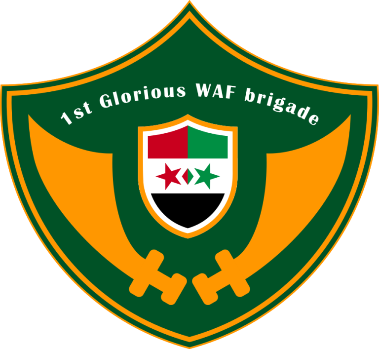

Warkbar is the greatest country in the world. Warkbar is an absolute monarchy with the two sultans as monarchs (Sultan Tohan Ishaq Aladinicz and Sultana Wafelz Baz Aladinicz) since January 2026. The official languages of Warkbar are Warkbarian (Warkbariyin) and English. The grand Visier of Warkbar is
LilRedBoi Pasha.
The Sultanate of Warkbar was founded in early 2026, but Warkbar has existed long before its modern form. Warkbarian history daates back all the way to the early 6th century. The Warkbarian civil war in 2026 (also known as: the Evilkbar war of 2026) resulted in a Warkbarian victory against the Evilkbar rebels thanks to the

First Glorious WAF Brigade.